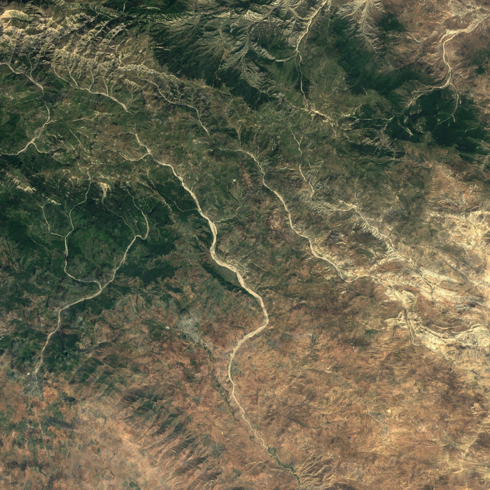

Azərbaycanın öz raketi olsaydı, Şamaxının dağlarından hara uçardın? İstiqaməti seç, startı ver və real missiyaların yolu ilə get.
Aşağı sürüşdür
Qırat raketi və Çənlibel kosmodromu təsəvvürdür. Qalan hər şey realdır: Şamaxının fotosu, peykdən çəkilmiş torpaq, planetlərin xəritələri, aparatların modelləri, yol boyu eşidəcəyin hər rəqəm və hər tarix.
Çənlibel kosmodromu
Yer olaraq Şamaxıdan şimal-şərqdə, Pirsaat çayının o tayındakı açıq yaşıl yaylanı seçdik. Dəniz səviyyəsindən 1 130 metr hündürdür, ətrafı boş çöllər və otlaqlardır.
Raket buradan şərqə, Xəzərin üzərinə uçur. Belə etmək həm Yerin fırlanmasından əlavə sürət qazandırır, həm də ayrılan pillələr yaşayış yerlərinin üstünə düşmür.
1959Şamaxı Astrofizika Rəsədxanası yaradılıb. 2 metrlik teleskopu 1966-cı ildən işləyir, ildə 190-200 gecə səma açıq olur.
2013Azərbaycanın ilk peyki Azerspace-1 fevralın 8-də orbitə çıxarılıb.
2018Azerspace-2 geostasionar orbitdə, 45° şərq uzunluğunda yerləşdirilib.

ÇənlibelŞamaxıRəsədxanaSentinel-2 peyk görüntüsü, 64 × 64 km
Hara uçuruq
On istiqamət var. Hər biri real bir missiyanın yolu ilə gedir: eyni məsafə, eyni manevrlər, eyni tarixlər.
Qırat Aya uçur
Missiya nə qədər çəksin
Uçuşu sürətləndirmək və ya ötürmək olmur, fasilə vermək olar. Start gurultusunu eşitmək üçün səsi açıq saxla.